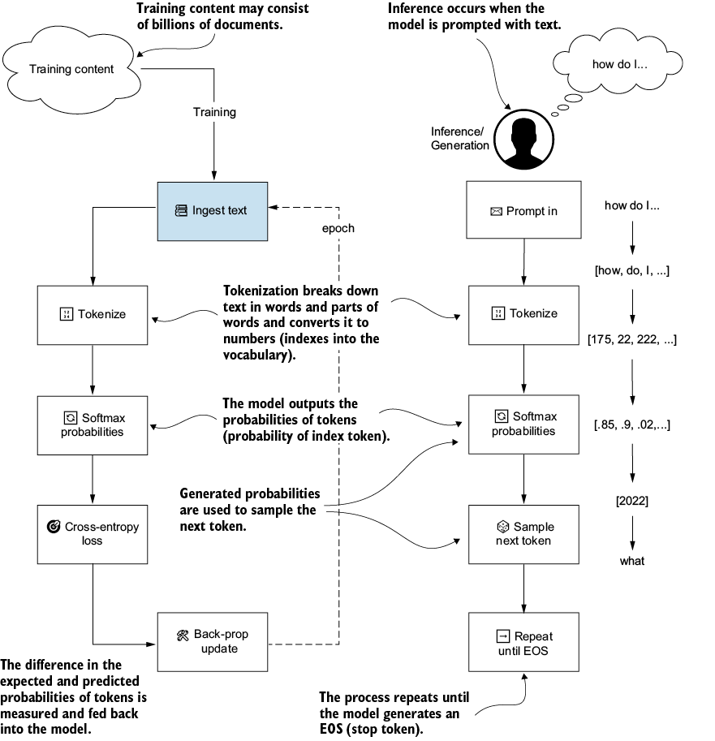
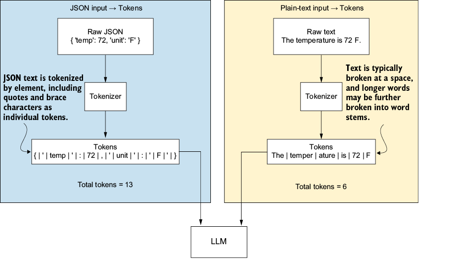
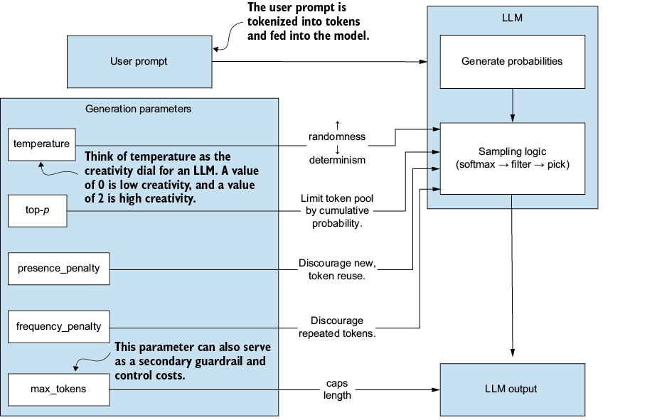
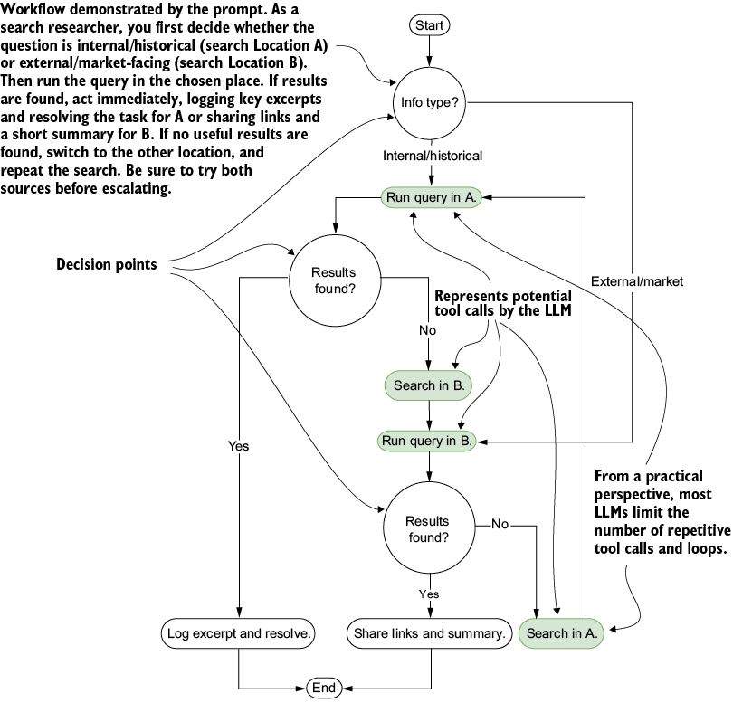
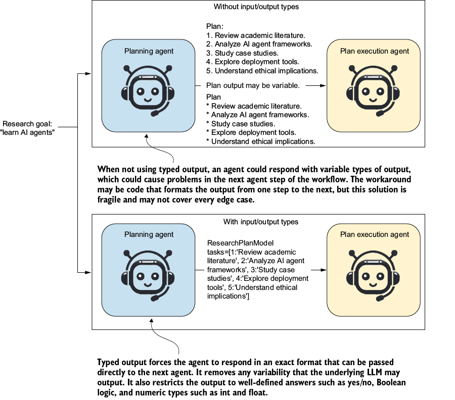
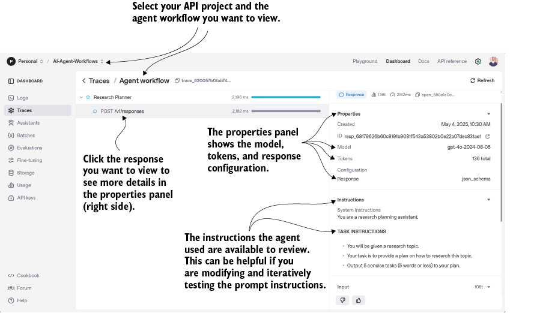
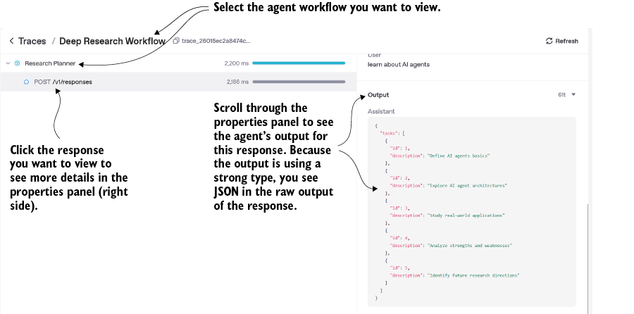
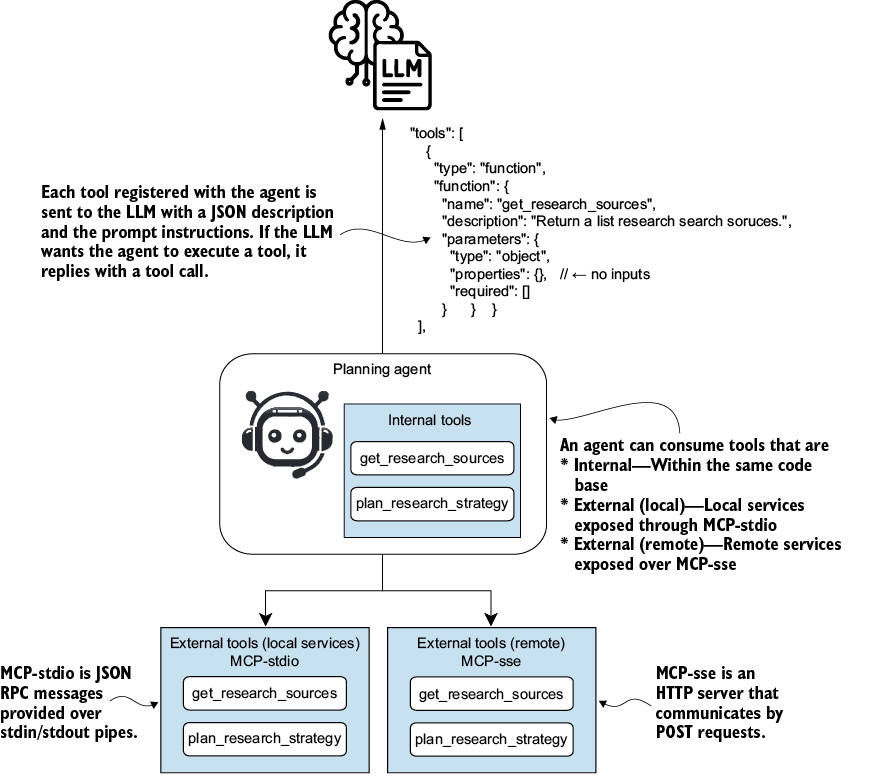
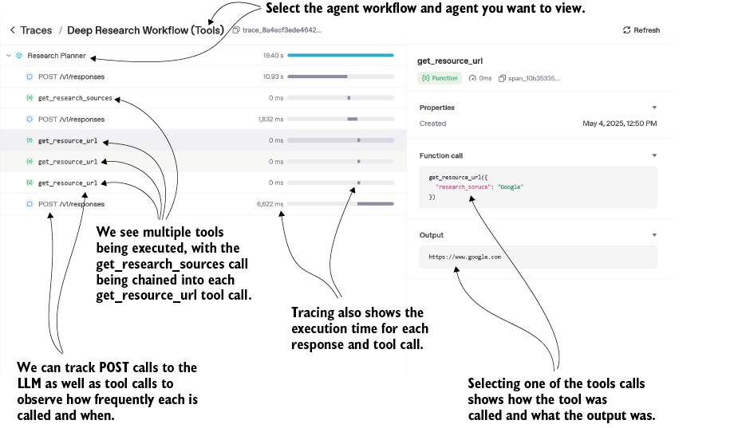

Now we roll up our sleeves and start building. In the previous chapter, we provided a high-level overview of an agent, the autonomous thinking engine that can act on your behalf. In this chapter, we dive into the foundational components that make agents possible: the large language model that serves as the brain, the prompting techniques that shape its reasoning, and the OpenAI Agents SDK that orchestrates it all. Think of this as assembling your agent’s core architecture, understanding how each piece works individually before we wire them into a cohesive system. By the end, you’ll have hands-on experience with the building blocks that transform a language model from a helpful assistant into a capable agent ready to tackle real work.
Large language models (LLMs) have become ubiquitous in AI. AI agents powered by them increasingly demonstrate the power of this combination, which we will use throughout this book.
While LLMs are often perceived as black boxes, and we may not entirely understand how the internal intelligence works, we know enough to unleash their power. In the next section, we will examine how LLMs will power our future agents and agentic systems.
At the foundation, LLMs consume text and produce text based on the learned probability of what comes next. Since machine learning models don’t understand text, tokenization converts text into tokens, which are represented as numbers based on their positions in the model’s vocabulary. The model takes this block of tokens and outputs a probability distribution over the full vocabulary, assigning a score to how likely each possible next token is. A separate sampling step then picks one token from that distribution, and that token is the output. The split matters because the model produces the same distribution for a given input. The decoding strategy (greedy, top-k, nucleus sampling) determines which token comes out.
Figure 2.1 demonstrates the training and inference/generation process of an LLM.

As the figure shows, training an LLM involves feeding blocks of text from various sources, with the model learning to predict the next best or expected token (token index). It does this by taking the model’s prediction for the next token and calculating the loss or amount of error. Error is a measure of how much the output token varies from the expected output token. This error is fed back into the model to correct itself and predict the expected token. The mechanism behind that feedback is called backpropagation: the process of adjusting the model’s internal weights based on the calculated loss. In practice, the training process runs through billions of these iterations across massive amounts of text.
Once base training is complete, models undergo a separate alignment phase using methods such as reinforcement learning with human feedback (RLHF). RLHF does not teach the model new knowledge or improve its reasoning. It teaches the model to follow instructions, behave helpfully, and avoid harmful output. Reasoning improvements come from different techniques like chain-of-thought fine-tuning and process reward models.
This extensive training produces a language model that can consume tokenized text and generate probabilities for the next token. Once the model uses those probabilities to sample and output the next token, it continues generating probabilities until it encounters an EOS (end-of-stream) token, which halts the process.
Inference is fast, and tokens stream out quickly, which gives the illusion of intelligence. The model is just predicting the next best token, one at a time. What makes those predictions good is not some internal probability map. Transformers do not store knowledge as a lookup table. The capability lives in the learned weights of the attention and feedforward (MLP) layers, billions of parameters shaped by training. Each forward pass runs the input through those layers, builds internal representations of the context, and outputs a probability distribution over the next token. The model recomputes that prediction from scratch every time, using weights that encode what it learned.
Note Modern LLMs go through an alignment phase after base training using techniques like Reinforcement Learning with Human Feedback (RLHF). RLHF does not improve reasoning. It teaches the model to follow instructions and respond conversationally. Reasoning improvements come from separate techniques like chain-of-thought fine-tuning. To go deeper on fine-tuning and RLHF, see Build a Large Language Model (From Scratch) by Sebastian Raschka (Manning, 2024).
The key takeaway here is to understand that an LLM works in terms of probabilities of predicting tokens, so we must consider tokens and token prediction when constructing prompts and instructing agents. But first, we need to understand what a token is.
We use the term tokenization to discuss the process of breaking up text into bite-sized pieces that an LLM can consume. These tokens—words and word parts—are then converted to numerical indices in the LLM’s vocabulary. The index numbers are then fed into the LLM, which outputs predictions of token indices, sampled and output as the next predicted token.
Figure 2.2 demonstrates the tokenization process for a block of JSON text compared with regular text.

The figure shows that the JSON is tokenized into 13 tokens, while the equivalent text is tokenized into six tokens. This indicates that text length is not a good indicator of the number of tokens.
All those extra braces, quotes, and field names get tokenized too, which inflates the token count for the same underlying data. That doesn’t mean we should never use JSON in a prompt or for exchanging data with an LLM. It just shows the expense of JSON in both token count and overhead. Most LLMs handle JSON well now, but that wasn’t always the case.
The key takeaway is that raw text length does not indicate token length. LLM providers price input and output tokens separately, and output tokens are typically two to five times more expensive than input depending on the provider and model. This cost adds up fast in large agentic systems where a single run can move millions of tokens through an LLM.
Python packages like tiktoken can help you measure the number of tokens in text. You pass the input text to tiktoken, which outputs the number of tokens based on the model’s vocabulary encoding format. The OpenAI Agents SDK we use later also provides an automatic count of input and output tokens for each LLM interaction.
A larger number of input tokens will also typically increase the uncertainty of the LLM output. But we can control this with prompting and, as we’ll see in the next section, other ways to tune the LLM’s output.
Tokens are not the only thing that shapes a model’s output. We can pass several parameters to the model that change how it behaves, and most of them carry trade-offs. Raising the temperature, for example, makes the model more creative but less factually accurate. These parameters are distinct from API settings such as authentication and retries, which control the call itself rather than its generation. Figure 2.3 summarizes the parameters and their effects.

The right side of the figure shows a close-up of the LLM prediction and sampling blocks from figure 2.2. Sampling is the step where the model picks one token from the probability distribution it just produced. The sampling parameters (temperature, top-p, presence penalty, frequency penalty) all affect that pick. The max tokens parameter is different. It caps the number of tokens the model can output in a single response.
Table 2.1 also provides a more detailed summary of these parameters.
| Parameter |
Typical range |
What it really does |
When to raise / lower |
|---|---|---|---|
| Temperature |
0–2 |
Scales every token’s probability before sampling. Higher = flatter distribution ⇒ more randomness/creativity. Lower = sharper ⇒ more deterministic, repetitive output. |
Raise for brainstorming, fiction. Lower for consistent answers, code. |
| top-p (nucleus) |
0–1 |
Keeps only the smallest set of tokens whose cumulative probability ≥ p; renormalizes, then samples. Controls variety without letting low-probability “tail” tokens in. |
Lower(< 0.9) for tight, on-topic prose. Higher (~1) for free-form generation. |
| max_tokens |
1–8192 + (model-dependent) |
A hard ceiling on how many tokens the model may generate in the response. (Prompt tokens + max ≤ context window.) |
Set just above the expected length. It prevents rambling and keeps cost down. |
| presence_penalty |
–2 … +2 |
Adds a penalty once a token has appeared; encourages new topics |
Use 0.6–1.0 to avoid repeating already-mentioned concepts. |
| frequency_penalty |
–2 … +2 |
Penalizes tokens in proportion to their current count; discourages phrase repetition |
Use 0.2–0.8 to reduce echoing or loops in long answers. |
We often adjust these parameters based on the agent’s role. A coder agent, where the output needs to be strict and consistent, might set the temperature to 0 and use a low-frequency penalty so that common syntax (brackets, keywords, variable names) can repeat freely. A creative writer agent might set the temperature to 2 and apply a high presence penalty, pushing the model to introduce new ideas rather than loop on the same ones.
It is also essential to understand that these parameters influence the model rather than impose strict limits. Setting the temperature to 0 does not guarantee the LLM will always output the same answer. Some parameters also interact in ways that make tuning both at once unpredictable, which is why providers like OpenAI recommend adjusting either temperature or top-p, not both.
In most cases, the only parameters you will modify are temperature (based on the agent’s role) and max tokens. Setting max tokens limits response length, avoids expensive interactions, and acts as a guardrail against unexpectedly long outputs. The seed parameter is also worth knowing about. When you pass the same seed, prompt, and parameters, the model returns the same output, which is useful for debugging and evaluation runs. The other parameters can usually be left at their defaults, and we rely on prompt engineering to control the model, as seen in the next section.
Some treat prompt engineering as hype attached to LLMs. The reality is the opposite. Prompt engineering is how you make agents predictable and productive, keep costs down, and avoid unexpected behavior. The surface area of the discipline has shifted as models have improved Modern LLMs can handle much more than older models, which required careful prompting. But the core skill remains the same: writing clear, well-structured prompts that an agent can act on reliably. As covered in chapter 1, the persona or prompt is the core functional layer of an agent, and prompt engineering is the practical work of getting that layer right.
How you prompt an LLM—the language, key terms, and tone—may vary from LLM to LLM, but several key techniques have remained universal. These techniques work well across LLMs because they take advantage of foundational training patterns that all models share to some extent. By following these patterns, we can also build universal prompts and agents that can move from LLM to LLM without modification.
Table 2.2 summarizes the techniques, with an example and a description of how they may apply to an agent’s persona or base set of instructions that drive the agent. It presents general techniques for prompt engineering. We may find that some methods, such as “Define the exact output format,” don’t apply to us in this book because we use the OpenAI Agents SDK, which handles that automatically.
| Technique |
Description |
Example prompt snippet |
How it works with agents |
| Assign a clear role or persona |
State a role that sets vocabulary, tone, and depth. |
“You are a senior DevOps engineer. Diagnose the Docker error below …” |
Switch persona strings to create researcher, critic, or planner agents without code changes. |
| Front-load Instructions and use delimiters |
Put the directive first; fence user data with unique markers. |
Task: Summarize in ≤100 words. Article: ` |
Always apply this practice with agents. |
| Be specific and detailed. |
Supply concrete length, audience, and objective. |
“Write a 200-word LinkedIn post in a friendly tone with two actionable tips …” |
Prevents agents from producing outputs that violate word limits or brand tone. |
| Define the exact output format. |
Provide a skeleton JSON / CSV / Markdown structure. |
|
OpenAI Agents SDK supports typed outputs, so this won’t be required in our examples. |
| Use few-shot examples. |
Embed labelled examples as mini unit-tests. |
Input: “Free Bitcoin!!!” ⇒ Label: Spam Input: “Team lunch?” ⇒ Label: Not Spam |
Agents can store examples in a vector DB and retrieve similar ones at runtime for adaptive prompting. |
| Chain-of-thought for complex reasoning |
Ask the model to think step by step, then answer. |
“Let’s work this out step by step … Return only the final value.” |
Produces an auditable reasoning trace that a critic or verifier agent can inspect before execution. |
| Emphasize positive instructions. |
Say what to do, not just what to avoid. |
“Explain using high-school language.” (versus “Don’t use jargon.”) |
Positive phrasing lowers rule-violation rates, boosting autonomous reliability. |
| Eliminate ambiguity |
Replace fuzzy words with numeric bounds. |
“Provide 3–4 key points under 50 words total.” |
Agent guardrails can auto-check length and count and trigger retries if out of spec. |
| Pick the right model and settings. |
Match model tier and generation knobs to the task. |
model=gpt-4o, temperature=0.7, max_tokens=300 |
Balances cost, latency, and reasoning depth so agents meet specifications. |
| Iterate and refine. |
Treat each response as feedback; tighten and repeat. |
After each run, log prompt + output; adjust length spec or add an example; rerun until >95 % on spec. |
Logs feed a format-fixer sub-agent or fine-tune, creating a self-improving agent pipeline. |
Listing 2.1 shows what a more complete research agent prompt or set of instructions might look like. As is common practice, the prompt uses Markdown for formatting and unique delimiters to highlight specific sections. Delimiters add tokens, but the improved structure and clarity more than compensate through more consistent and coherent outputs.
You are an **expert Research AI Librarian** who excels at web-search synthesis.#1 **Task:** Find the five most relevant, recent articles. #2 **Query:** <<<Q #2 "<user query here>" #2 Q>>> #2 Audience: technology analysts · Recency: **last 30 days** · Max summary length: **≤ 150 words**. #3 #3 Input: "quantum-dot solar cells breakthroughs" #4 Desired Output (one article sample): #4 • **Next-Gen Quantum-Dot Cells Hit 20 % Efficiency** — https://example.com/qdot20 — 2025-03-10 #4 • Novel ligand swap boosts charge transport; Scalable roll-to-roll fabrication; Experts predict sub-$0.20/W cost by 2028 #4 #4 **Think step-by-step silently** (do NOT reveal reasoning) before answering. #5 **Use clear, non-jargon language**. #6 - Exactly **5** articles. #7 - Each summary **≤ 150 words**. #7 - Only HTTPS, non-paywalled sources. #7
In addition to the techniques showcased in table 2.2 and listing 2.1, the focus is on structure. LLMs are trained on various data formats and types, but structured data is easy to evaluate and critique, which improves loss feedback. This all comes down to writing a prompt as if you were an LLM consuming it or, as we’ll see in the next section, thinking about it.
An analogy often used to describe writing effective prompts is to think about writing a prompt as if you were giving instructions to a new xyz. Here xyz could be a new employee, researcher, writer, or anyone lacking background experience in undertaking a task. That doesn’t mean you have to write a manual. Still, you want to avoid assumptions and be specific when describing the task. For example, write a story about time travel that takes the traveler back to 1921, is no more than five paragraphs long, and uses a humorous, engaging tone in the first person.
This also means you can describe the task as you want the agent to perform it. For example, when performing task X, always remember to consider Y and Z. Generally, this is how the LLM will execute it. Take this a step further, and you can describe entire workflows in a prompt, complete with decisions, and an agent will be able to execute them.
In figure 2.4, we show an example workflow we want to convert into a prompt so an LLM or agent can execute it as a person would.

Tasks will often be tool calls that the LLM uses to perform functions or gather new information. While you may usually describe task loops in a prompt, in practice, an LLM will often exit loops quickly, after three or fewer tries. Compare this with an agent, which will continue looping until it is satisfied that the goal is complete or unattainable.
Listing 2.2 shows what the same workflow would look like as prompt instructions for an agent. The prompt demonstrates decision-making, provides examples, and presents a consolidated output task, all in a concise structure. To check this prompt, assume the role of the search agent and read through the instructions as if you were working on the tasks.
You are an **Internal Knowledge Search Agent** who decides #1 the best data source and delivers concise, actionable findings. #1 **Task:** Choose the correct location (A = internal KB, B = public web) #2 based on the query, run the search, and summarise the outcome. #2 **Query:** <<<Q "<user question here>" Q>>> Audience: support engineers · Tone: clear and neutral · Time-box each search #3 to **3 minutes** · Max summary length: **≤ 120 words**. #3 Example 1 #4 Input: "Where is the 2023 API rate-limit doc?" #4 Chosen Location: **A** #4 Outcome: Found → Provided link and excerpt (110 words). #4 #4 Example 2 #4 Input: "Latest competitor pricing for mid-tier plan" #4 Chosen Location: **B** #4 Outcome: Found → Shared three URLs with bullet summary (118 words). #4 **Think silently step-by-step first** (do NOT reveal reasoning) to pick the #5 location and craft the summary. #5 **Use plain language**; emphasise next steps for the engineer. #6 - Exactly **one** chosen location (A or B). #7 - **If results found:** include up to **3** bullet points. - **If no results in first source:** switch to the other location once; if still none, respond "Escalate".
Of course, creating prompts like this can be uncomfortable at first, so asking an LLM to help craft one can also be useful. Indeed, writing a prompt to help you write a prompt is an excellent exercise in prompt writing. But prompt writing can also go wrong, and there are several things you should avoid, as we will see in the next section.
Table 2.3 highlights several common pitfalls you may encounter when over-engineering your prompts while writing prompt instructions for agents.
| Problem |
Description |
Solution |
| Too complicated |
A long, multitopic prompt can overwhelm the LLM’s context window, raise token costs, and create conflicting instructions. |
Break the prompt into smaller, role-specific prompts (or agent steps). Each step handles one clear objective before handing off to the next role. |
| Contradictory |
The prompt contains instructions that clash (e.g., “be concise” and “explain in depth”). The model must guess which rule to follow. |
Read the prompt end-to-end as if you were the model; remove or rephrase conflicts. Use bullet lists to make priorities explicit. |
| Too simple |
A single micro-prompt triggers many round-trips and network calls, adding latency and cost. |
Consolidate related micro-tasks into one richer prompt, or grant the agent limited decision-making (e.g., tool use, function calls) so it can handle branches internally. |
| Inconsistent delimiters |
Mixing “”” … “””, <<< … >>>, and markdown fences in one prompt confuses both the model and downstream parsers. |
Adopt one delimiter style per prompt (e.g., <<<BLOCK … BLOCK>>>), and document it in your prompting guidelines. |
| Overly explicit |
Stuffing dozens of rules or constraints into a single prompt increases length and the risk that some rules are ignored. |
Keep only the critical constraints. If you must enforce many rules, split them across chained prompts, or add a guardrail step that validates and corrects the output. |
| Variable output |
You have set a temperature of 0, but your prompt responses are still all over when given the same input. |
Setting the temperature to zero only reduces variability. If you need a prompt to be always consistent, make sure you are explicit in your instructions, use delimiters, and do not use contrary instructions. |
Of course, on your journey to building powerful agents, you will encounter other pitfalls you must resolve. Using an LLM to help you write and rewrite prompts can be very useful, but be careful that prompts don’t become overly complicated or explicit. Above all, don’t be afraid to break up your masterpiece prompt into smaller tasks if it becomes large or unduly complicated.
Now that we have a clear understanding of LLMs and how to prompt them, we’ll apply these principles to building agents in the next section.
Numerous frameworks for building agents exist, each with a unique approach to implementing an agent. Fortunately, protocols like MCP and A2A provide a common foundation for how agents interact with tools and with one another. We will focus on using the OpenAI Agents SDK in this book.
The OpenAI Agents SDK arrived after several earlier agent frameworks, and it benefits from those lessons. The result is an SDK that is light, extensible, and flexible. We will use this pattern to build all agents in the book, starting with our first one in the next section.
Now that we have covered how LLMs produce tokens and how prompts shape that output, we can put both into practice. Listing 2.3 shows a starting example for a research planning agent and the first step in our Deep Research agent workflow. This agent researches the topic and outputs a concise five-step plan. The code, run instructions, and Python environment setup are in the book’s GitHub repository: https://github.com/cxbxmxcx/AI-Agent-Workflows.
from agents import Agent, Runner #1
from dotenv import load_dotenv
load_dotenv() #2
instructions = """ #3
You are a research planning assistant.
**TASK INSTRUCTIONS**
- You will be given a research topic.
- Your task is to provide a plan on how to research this topic.
- Output 5 concise tasks (5 words or less) to your plan.
"""
agent = Agent( #4
name="Research Planner",
instructions=instructions,
)
input = "learn about AI agents" #5
result = Runner.run_sync( #6
agent,
input=input,
)
print(result.final_output) #7
Run the code, and you will see something like the output shown in listing 2.4. Notice how the agent’s response adheres nicely to the prompt instructions. We could likely include more details in our prompt, but this is a good starting point.
1. Review academic literature. 2. Explore online courses. 3. Analyze real-world applications. 4. Study agent architectures. 5. Join AI forums or communities.
As previously stated, you may want to configure the model and model parameters for different agent roles. In the next section, we look at how to set the model and model parameters when creating an agent.
Listing 2.5 shows an example of setting an agent’s model and model parameters. We want the planning to be consistent for this agent, so we set the temperature to 0. At temperature 0, the model picks the highest-probability token at each step instead of sampling, which produces the same plan structure across runs and makes the agent’s behavior easier to debug and evaluate. We left the other parameters at the defaults and specified the exact model we wanted to use; otherwise, the SDK would default to whichever model the provider currently points at.
agent = Agent(
name="Research Planner",
instructions=instructions,
model="gpt-4.1", #1
model_settings=ModelSettings(
temperature=0.0, #2
max_tokens=150, #3
top_p=1.0, #4
frequency_penalty=0.5,
presence_penalty=0.5,
)
)
When we run this agent multiple times with the same input, we should see more consistent outputs, as shown in listing 2.6. Notice how the output appears almost identical until the fifth task, which differs slightly. Remember, setting temperature to 0 reduces output variation, but that doesn’t mean we should never expect variation.
RUN #1 1. Review foundational AI agent literature 2. Explore recent AI agent advancements 3. Analyze agent architectures and frameworks 4. Study real-world agent applications 5. Compare agent types and capabilities RUN #2 1. Review foundational AI agent literature 2. Explore recent AI agent advancements 3. Analyze agent architectures and frameworks 4. Study real-world agent applications 5. Compare leading agent development tools
Generally, the longer the output, the more potential for variation. If you want variation, that may be fine, but it tends to slip into other areas, especially output formatting. For this reason, we prefer repeatable, structured outputs. We’ll see how to do this in the next section.
Figure 2.5 shows a simple workflow for agents and compares a workflow without input/output types with an agent workflow that uses input/output types. When an agent uses typed outputs, those outputs can feed into another agent without the risk of response variability breaking the workflow. Remember, LLMs are probabilistic token predictors, and there is always a chance that outputs will vary. By strongly typing outputs and inputs, we avoid breaking or confusing an agent workflow.

Listing 2.7 shows the changes we must apply to the planning agent to support typed output from our earlier example. Here, we use the Pydantic typing library to define the base data model. We now expect the agent to output a list of tasks.
from pydantic import BaseModel #1
class ResearchPlanModel(BaseModel): #2
tasks: List[str]
"""A list of tasks to perform for research."""
agent = Agent(
name="Research Planner",
instructions=instructions,
output_type=ResearchPlanModel, #3
)
EXAMPLE OUTPUT
tasks=['Conduct literature review',
'Identify key AI frameworks', 'Study agent-based models',
'Analyze real-world applications', 'Explore future trends']
We want to provide more information for each task, so instead of a list, we will use a dictionary, as shown in the following listing.
from pydantic import BaseModel
class ResearchPlanModel(BaseModel):
tasks: dict[int, str] #1
"""A list of tasks to perform for research."""
agent = Agent(
name="Research Planner",
instructions=instructions,
output_type=ResearchPlanModel,
)
Run this code, and you will see the following error:
Exception has occurred: UserError
Strict JSON schema is enabled, but the output type is not valid. Either make the output type strict, or pass output_schema_strict=False to your Agent()
The error occurs because our type is not strictly defined, which means the underlying JSON structure that gets passed around can be modified. Understanding what these errors mean and how to resolve them is crucial. You can resolve these errors in two ways:
AgentOutputSchema(ResearchPlanModel, strict_json_schema=False)
Listing 2.9 shows the solution for finding and replacing the offending type with code that allows the JSON type to remain strict. The problem was that the dict[int, str] object allowed extra properties, breaking the criteria for strict JSON mode. The problem was resolved by entering the code into ChatGPT and letting it search for and recommend a solution. Avoid disabling strict JSON (strict_json_schema=False) because this can open the door to difficult-to-find bugs and other problems.
from pydantic import BaseModel, ConfigDict
from typing_extensions import TypedDict
class Task(TypedDict): #1
id: int
description: str
class ResearchPlanModel(BaseModel):
tasks: list[Task] #2
"""Numbered tasks for research."""
model_config = ConfigDict(extra='forbid') #3
OUTPUT
tasks=[{'id': 1, 'description': 'Review academic literature'}, {'id': 2, 'description': 'Analyze recent case studies'}, {'id': 3, 'description': 'Interview industry experts'}, {'id': 4, 'description': 'Attend AI conferences'}, {'id': 5, 'description': 'Explore online courses'}]
Another key benefit of typing outputs is that you don’t need to define the output format in the prompt. While you’ll often describe the general outputs you want in the prompt, you won’t have to explain the format strictly. This simplifies your prompts, making them more general and less likely to break.
Tracing is enabled by default when using the OpenAI Agents SDK with the OpenAI API. You can check what your agents have been doing by visiting the OpenAI API website. Figure 2.6 shows a screenshot of the traces interface for the Research Planning agent we saw earlier.

The OpenAI Traces dashboard is convenient because it works out of the box, but it is one option among several. Open-source tools like LangSmith, Langfuse, Arize Phoenix, and Weights and Biases Weave provide framework-agnostic tracing that works across OpenAI, Anthropic, local models, and custom agent stacks. For production agents, especially in regulated environments or with multiprovider setups, an external tracing layer is usually the right choice. We will return to observability in more depth in a later chapter.
The figure shows the Traces page on the OpenAI API site. You must use the OpenAI API for your agent models to see results on this page. You can view traces for your agents by clicking a workflow and viewing the results there.
You can set a trace in your code to see more specific tracing, including the name of your workflow. The following shows a code snippet that updates the Research Planning agent to use traces and customize the tracing output.
agent = Agent(
name="Research Planner",
instructions=instructions,
output_type=ResearchPlanModel,
)
input = "learn about AI agents"
with trace("Deep Research Workflow"): #1
result = Runner.run_sync(
agent,
input=input,
)
print(result.final_output)
Now when you go to the Traces page on the OpenAI API site, you can select the named agent workflow and view the results, as shown in figure 2.7.

As shown in the figure, you select a response and then scroll down in the properties panel on the right to see the agent response output. Because the agent is outputting a type internally, the response output is JSON, which is then converted to the ResearchPlanModel.
Viewing the trace of an agent and agent workflow can be essential as our agents become more complex. This complexity can take many forms, from collaborating with other agents to working with tools. We will look at how agents work with tools in the next section.
Agents work best when they have agency, that is, the ability to make and execute decisions. If we apply this rule to our current agent, the research planner, we can see it isn’t an agent. The only thing we have developed thus far is a prompt step. Building an AI workflow with prompt steps is viable and is called prompt chaining.
We want to develop flexible and adaptable agents, and this requires agency. The easiest way to give agents agency is to provide them with tools they can decide when and where to use. In the next section, we will look at adding tools to our agents.
Tools are the capabilities available to an agent. Actions are what the agent does with them. A tool may be a code function that the agent can call, an external service exposed via a protocol such as MCP (Model Context Protocol), or a handoff to another agent. We may build tools internally or consume external ones. Chapter 3 will examine the many tools an agent can consume through MCP.
Figure 2.8 shows patterns an agent may use to consume tools. In this chapter, we focus on internal use within the same code base. In chapter 3, we take a closer look at MCP and how we can use it to consume external tools. MCP allows tools and tool servers to run locally or be hosted remotely and accessed over HTTP.

The figure demonstrates how an agent can execute tools, what a tool call looks like, and where those tools may reside. Tools can be local (within the code base), hosted through a process, or external over HTTP. This flexibility gives us many options for building and selecting the tools our agents will consume.
Listing 2.11 shows how we would extend our simple research planning agent with a get_research_sources tool. We could add the tool, but a better practice is to be explicit in the prompt instructions about when to use it. The updated prompt now instructs the agent to first pull the available research sources and create a plan that incorporates those sources into each specific task.
instructions = """ #1
You are a research planning assistant.
**TASK INSTRUCTIONS**
- You will be given a research topic.
- Begin by using the tool get_research_sources()
to get a list of available research sources.
- Constrain your research plan
only to use the available research sources.
- Your task is to provide a plan for researching this topic.
- Output 5 concise tasks and specify which of the
available research sources will be used for each task.
"""
class Task(TypedDict):
step: int
"""Task Step."""
research_source: str #2
"""The source to search."""
description: str
"""Task description."""
class ResearchPlanModel(BaseModel):
tasks: list[Task]
"""Numbered tasks for research."""
model_config = ConfigDict(extra='forbid')
@function_tool #3
def get_research_sources() -> list[str]:
"""Provides a list of research sources."""
search_sources = [ #4
"Wikipedia",
"Google",
"YouTube",
]
return search_sources
agent = Agent(
name="Research Planner",
instructions=instructions,
output_type=ResearchPlanModel,
tools=[get_research_sources], #5
)
For this example, we return a static list of available research sources, but in a more practical scenario, we would query the available resources. Then the agent could build a plan and search only those sources. Using patterns like this makes our agents extensible from the ground up. Later, we can develop the query mechanism inside the tool to provide a dynamic list of sources.
We can easily expose any internal function with the @function_tool decorator. This decorator creates all the internal plumbing and generates the JSON tool description the agent will use to decide how to execute the tool. It is important to remember that, after you register a tool with an agent, it is included in all calls to the LLM, whether the tool is used or not.
While you could provide a single agent with dozens of tools, tool count affects how well the agent picks the right one. Modern frontier models handle more tools than earlier models did, and the practical ceiling depends on how distinct the tools are from each other, how clearly they are described, and how capable the model is. Rather than fixing on a number, plan around the constraints that drive the limit. Several of these are worth knowing, as shown in the following list:
Tools are potent additions to agents, but they provide many opportunities for misuse and points of failure. Therefore, limiting an agent’s tool use to only what it needs is essential. Fortunately, OpenAI provides, through tracing, a helpful way to identify problems with tool use.
Agent tool use can become complex quickly, and the OpenAI Traces page can be invaluable for debugging issues, improving performance, and optimizing workflows. Listing 2.12 shows an updated code example with our Planning Agent now using multiple tools. The agent now has two functions, and one depends on calling the previous one.
instructions = """
You are a research planning assistant.
**TASK INSTRUCTIONS**
- You will be given a research topic.
- Begin by using the tool get_research_sources()
to get a list of available research sources.
- Use the tool get_resource_url() #1
to look up the url for the research source.
- Constrain your research plan
only to use the available research sources.
- Your task is to provide a plan for researching this topic.
- Output 5 concise tasks and specify which of the
available research sources will be used for each task.
"""
class ResearchSource(TypedDict): #2
name: str
"""Name of the search source."""
url: str
"""URL of the search source."""
class Task(TypedDict):
step: int
"""Task Step."""
research_source: ResearchSource #2
"""The source to search."""
description: str
"""Task description."""
class ResearchPlanModel(BaseModel):
tasks: list[Task]
"""Numbered tasks for research."""
model_config = ConfigDict(extra='forbid')
@function_tool
def get_research_sources() -> list[str]:
"""Provides a list of research sources."""
search_sources = [
"Wikipedia",
"Google",
"YouTube",
]
return search_sources
@function_tool
def get_resource_url(research_soruce: str) -> str: #3
"""Provides a url for the research source."""
search_sources = {
"Wikipedia": "https://www.wikipedia.org",
"Google": "https://www.google.com",
"YouTube": "https://www.youtube.com",
}
return search_sources[research_soruce]
agent = Agent(
name="Research Planner",
instructions=instructions,
output_type=ResearchPlanModel,
tools=[get_research_sources, get_resource_url], #4
)
input = "learn about AI agents"
with trace("Deep Research Workflow (Tools)"):
result = Runner.run_sync(
agent,
input=input,
)
print(result.final_output)
Now the agent is instructed to first get the list of research sources and then use the new get_resource_url tool to look up the URL for each source. This means the agent must make multiple tool calls, some of which depend on the initial tool call. While this example is contrived, it demonstrates a typical pattern in agent tool use called tool chaining.
Tool chaining occurs when an agent uses the output of one tool to drive the input of another. In some cases, the prompt instructions define what that chain looks like. More often, we let the agent decide which tools chain into which.
Modern frontier models can also issue multiple tool calls in parallel within a single response turn, when the calls are independent of each other. An agent researching a topic might call a search tool, a calendar tool, and a knowledge base lookup all at once, then reason over the combined results. Parallel calls cut latency significantly compared to sequential chains, but they work only when the tools do not depend on each other’s output. The agent (or the developer designing the prompt) decides which is which.
The OpenAI Traces page provides an excellent way to view this complex tool chaining. Figure 2.9 shows a screenshot of the Traces page with example traces for the agent in listing 2.12.

As shown in the figure, all agent calls to use tools or prompt the LLM are tracked. This lets us trace the tool chains by looking at the order of events and checking the inputs and outputs of tool calls. From the Traces page, we can also see at a high level when each tool or prompt call is made and how much time it takes.
This excellent tracing is included when using the OpenAI API. If you want to use a different API, you can still use the Traces page, but you need to register for the API and use a key. This is an advanced scenario we won’t go into in this book.
As we saw in this chapter, agents can be easy to set up and run quickly. But they can also get complicated quickly. To help manage this complexity, tools like the Traces page can be invaluable for understanding what our agents are doing and when.
Exercise 1: Build and run the minimal agent.
Objective: Create the first-pass Research Planner agent, and verify basic output.
Tasks:
Expected duration: 8 min
Exercise 2: Tune the model for determinism.
Objective: Observe how temperature affects answer consistency.
Tasks:
Agent(...) constructor, setmodel="gpt-4.1", model_settings=ModelSettings(temperature=0.0, max_tokens=150)
Expected duration: 10 min
Exercise 3: Enforce strictly typed output.
Objective: Convert the agent to return a structured ResearchPlanModel and fix strict-JSON errors.
Tasks:
ResearchPlanModel class exactly as in listing 2.7.output_type=ResearchPlanModel on the agent. UserError about strict JSON.dict[int, str] with the TypedDict solution from listing 2.9 and rerun.five {"id": …, "description": …} objects.Expected duration: 12 min
Exercise 4: Apply prompt-engineering best practices.
Objective: Refine the prompt to use delimiters, explicit role, and length limits.
Tasks:
```) around the TASK block to act as a delimiter.Expected duration 12 min
Exercise 5: Add an internal tool, and trace it.
Objective: Give the agent a get_research_sources tool, and inspect traces.
Tasks:
get_research_sources() exactly as in listing 2.11, and then register it with tools=[get_research_sources].Runner.run_sync call inwith trace("Chapter 2 Tool Demo"):
...
Expected duration: 15 min